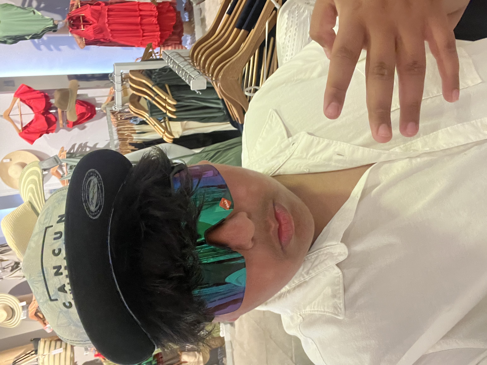

About Me
Hello! I'm Hrihaan Bhutani, a high school student at Emerald High School in Dublin, CA. I am passionate about engineering, technology, and leadership. My goal is to pursue a career in computer science and business administration, with a strong interest in attending UPenn's Wharton School.
I have been actively involved in various school organizations and programs that have helped me develop my skills and knowledge in these fields. I am currently serving as an Associate Student Director at PFSO and have been part of the TUPE program as an officer. Additionally, I have volunteered at the Alameda County Library, where I built my leadership skills and contributed to community events.
My current coursework includes advanced classes in computer science and mathematics, and I have been involved in several engineering-related projects that have allowed me to apply my technical skills and creativity. In the future, I plan to continue expanding my knowledge and experience in these areas, aiming to make a significant impact in the tech industry.
Contact Information & Skills
Location: Dublin, CA
Email: bhutani6460@mydusd.org
Skills:
- Python (Basics)
- HTML/CSS (Basics)
- Public Speaking
- Leadership
- Fluent in English and Hindi
- Proficient in Spanish
My Journey in CS
From a young age, I have been fascinated by how things work, which naturally drew me towards engineering. My interest deepened when I took my first computer science class in high school. I was captivated by the process of coding and how it could be used to solve complex problems. This led me to pursue more advanced courses in both computer science and mathematics, where I learned various programming languages and algorithms.
One of the most memorable projects I worked on was creating a simple interactive game using JavaScript and CSS. This project not only honed my programming skills but also taught me valuable lessons in problem-solving and debugging. It was incredibly rewarding to see my code come to life and be able to share it with my peers. This experience solidified my desire to continue learning and growing in the field of engineering.
Looking forward, I am excited about the opportunities that lie ahead. I plan to attend UPenn's Wharton School, where I can combine my technical skills with a strong foundation in business administration. My goal is to innovate within the tech industry, leveraging both my engineering knowledge and business acumen to drive meaningful change and contribute to advancements in technology.